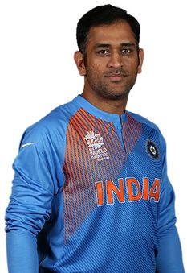

Born in Delhi, Virat Kohli shot into prominence as the Under-19 skipper, who led India to victory at the 2008 World Cup
held in Malaysia. That accolade gained him instant recognition and made him an overnight teen sensation. Soon he made
his ODI debut for India in Sri Lanka in August 2008 when he was thrust into the opener's role as both Virender Sehwag and
Sachin Tendulkar were ruled out due to injuries. He played two important knocks - 37 in the second ODI and 54 in the
fourth - both of which resulted in India winning, thereby enabling them to win the series as well. After such an impressive
showing, he was slightly unlucky to remain on the bench when England visited India in December 2008, as Tendulkar and Sehwag
had returned and the middle-order was strong and packed.
While no one doubted his abilities, his rather modest Test record was something that needed to be worked on. At the end of 2015,
Kohli had hundreds, but hadn't quite converted it into double tons. At the end of 2016, he had three, one each against West Indies,
New Zealand and England. Kohli - the Test batsman, had finally arrived. He finished the year with 1215 runs, at a whopping average
of 75.93. His Test average had passed fifty for the first time in his career.
Hi Dhoni

Mahendra Singh Dhoni's arrival in Indian cricket and his subsequent rise has been a story of unprecedented success,
punctuated by the occasional blip. Of all the players of the present generation, it is Dhoni who symbolizes the new India well.
Aggressive without being brash, successful without being arrogant, and seemingly possessing a Midas touch, Dhoni is the perfect
blend of a role-model and pin-up star.
Dhoni announced himself on the international stage with an array of almost agricultural shots and a bat that he wielded like an axe.
In his fifth match, he smashed 148 off a Pakistan attack that didn't know what had hit them. Six months later, he went one better,
to score a brutal 183 not out against Sri Lanka in an innings that made Virender Sehwag look snail-like. That innings also saw him
break Adam Gilchrist's record for the highest score by a wicketkeeper in a One Day International.
His growing stature and cool-headedness led to his appointment as India's captain for the inaugural T20 WC, where Dhoni's calm leadership
steered India to victory. He then became the ODI captain after Rahul Dravid relinquished the post, and eventually, ascended to the full-time
Test captaincy once Anil Kumble retired.On 4th Jan, 2017 Dhoni stepped down as the captain of the Indian ODI and T20I team.
Hi Yuvaraj
Amongst the cleanest hitters of a cricket ball, when Yuvraj Singh first started making waves in junior and Under-19 cricket,
everyone believed that a future Indian batting star had arrived. His debut, when he was not yet 19, confirmed that in spectacular
fashion, as he smashed an Australian attack comprising of Glenn McGrath, Jason Gillespie and Brett Lee to make 84 runs at better
than a run-a-ball in the 2000 edition of the Champions Trophy.
His electric fielding was an added asset in a team that had always been lethargic in the field. The added assurance of being in
the thick of things in ODIs and knocking on the doors of Test cricket saw Yuvraj bloom.
Yuvraj hit another jackpot, when he once again became the costliest player in the 2015 IPL auctions. He was bought by Delhi Daredevils
for a mammoth 16 crores, but was not retained by the franchise for the 2016 season. He was named in the World T20 squad for India,
while Sunrisers Hyderabad bought his services, where he would play a minor but vital role in the team's victorious campaign.